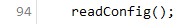
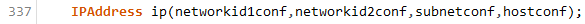
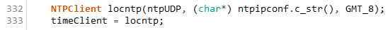
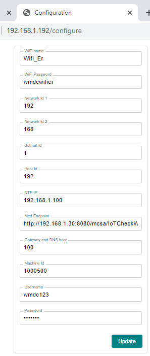

The `iot_spiffs.ino` file is the source code. Inside the `data` folder are the web and configuration files. The files in the `data` folder are stored in the ESP8226 when uploading the filesystem. Its called SPIFFS. The ESP8266 will read those files at initialization.
When ESP8266 is turned on, initialization takes place and reads the content of configs.json at setup() method.
`networkid1`, `networkid2`, `subnet` and `host` is the IP address of the MCD. At line 337 in iot_spiffs.ino, those values get assigned at start up. When combined, it becomes `192.168.1.51`
`ntpip` is the IP of the NTP server (192.168.1.100) where it hosted to. NTP is very important since it is used to acquire the current timestamp to be checked against dTime to determine whether the work order is on going or finished.
`username` and `userpass` is the credential of the MCD we use to logon to authform.html
`mcdapiendpoint` is the API for retrieving the work order status
`mId` is the MCD Id of the machine. See machines.xlxs
`gatewaydnshost` is the host of the default gateway and dns. If 192.168.1.100 is our DNS and Gateway, 100 is the host.
This is the configuration form. It updates the configs.json file. You cannot directly access this configuration page when not logged in.
